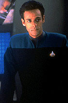
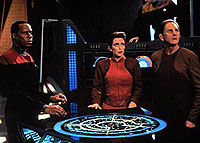

MANCHETE
DO EPISDIO
Segmento tem abordagem
inadequada
sobre o tema da possesso de corpos
Episdio
anterior | Prximo
episdio
Sinopse:
Data Estelar:
desconhecida.

Um
perigoso assassino morre em um aparente acidente, mas o oficial de
segurana responsvel por seu transporte acredita firmemente que
a conscincia do criminoso possa ter sobrevivido.
Quando sinais de que o assassino pode realmente estar vivo
comeam a aparecer, d-se incio a uma investigao para
encontrar a resposta para o mistrio.
Descobre-se ento que o assassino manteve-se "vivo" ao
transferir seu padro mental, por meio de nanotecnologia, para
outro indivduo. No caso, esse indivduo era ningum menos que
o doutor Bashir.
Comentrios:
"The Passenger" apresenta uma trama bastante
rotineira, com um desfecho que vendido no prprio prlogo do
episdio, deixando de aproveitar o nico potencial da histria,
que poderia ter corrido pela linha do suspense.
O tema da possesso de corpos uma constante em Jornada
nas Estrelas. O problema que, em casos como esse,
quanto mais cientfica fica a histria, pior. At as precrias
possesses vistas na Srie Clssica, em
episdios como "Return to Tomorrow" ou
"The Lights of Zetar", se mostram mais
convincentes, justamente porque no h necessidade de
explic-las. Transferir padro mental com um pequeno chip
inserido na pele uma piada.
O episdio marcado por uma execuo capenga, com um ato
final entupido com "tecnobaboseira", unicamente
enxertada para fazer uma histria absurda soar minimamente
plausvel.

Para
completar a desgraa do episdio, uma atuao simplesmente
abominvel de Siddig El Fadil como o assassino Vantika. Se no
fosse pelo interessante conflito entre Odo e Primmin, que surgiu
marginalmente durante o episdio, este seria um srio candidato
a pior episdio da temporada.
Se os produtores tivessem tentado um outro episdio na linha
"Bashir e Garak", seguindo o bom "Past
Prologue", possivelmente eles teriam conseguido
melhores resultados.
Citaes:
Quark -
"There's nothing wrong with a good delusion. I sell them
upstairs to dozen of people every day."
(No h nada de errado com uma boa iluso. Eu as vendo l em
cima para dzias de pessoas todos os dias.)
Trivia:
 Esta foi uma das duas nicas aparies do tenente Primmin
(James Lashly) na srie. Depois ele foi visto em "Move
Along Home".
Esta foi uma das duas nicas aparies do tenente Primmin
(James Lashly) na srie. Depois ele foi visto em "Move
Along Home".
Ficha
tcnica:
Histria de Morgan Gendel
Roteiro de Morgan Gendel, Robert H. Wolfe,
Michael Piller
Direo de Paul Lynch
Exibido em 22/02/1993
Produo: 009
Elenco:
Avery Brooks como
Benjamin Lafayette Sisko
Ren Auberjonois como Odo
Nana Visitor como Kira Nerys
Colm Meaney como Miles Edward O'Brien
Siddig El Fadil como Julian Subatoi Bashir
Armin Shimerman como Quark
Terry Farrell como Jadzia Dax
Cirroc Lofton como Jake Sisko
Elenco convidado:
Caitlin Brown como Ty Kajada
James Lashly como tenente George Primmin
Christopher Collins como Durg
James Harper como Rao Vantika